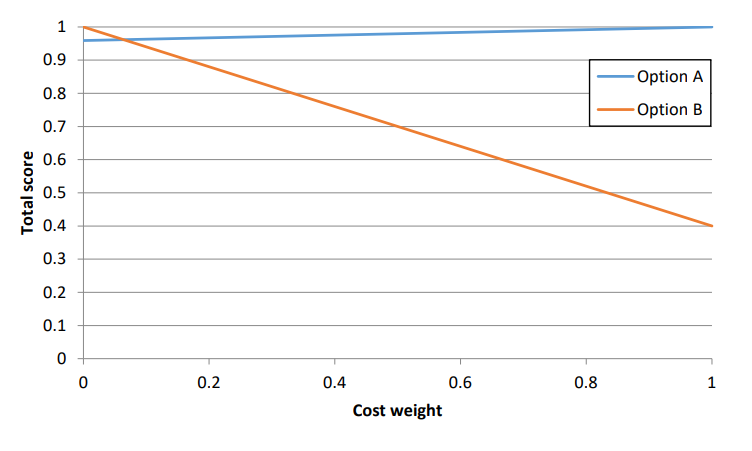

Objective 1.8#
LO# |
Description |
|---|---|
1.8 |
I can use a decision matrix to quantitatively compare various measures of merit. |
Decision Matrices#
Oftentimes, you find yourself trying to make a decision based on two or more different criteria or parameters. For example, suppose you want to use your cadet loan to buy a new car. You’re having difficulties making a choice, but you know that you want to make a decision based solely on cost and fuel economy. In order to decide which car is the best for you, you must either convert both parameters to a common metric (e.g., cost or fuel economy) or find a way to combine the two measures into a single score. The danger of converting to a common metric is that, while the measures may seem the same, their importance may vary. For example, depending on the situation you are in, the one-time cost of buying a car may be more important to you than the recurring cost of fuel economy, and vice versa. Common metrics don’t allow us to compare the importance of the various metrics, and for that reason, we will not be using common metrics in ECE 215. In this class, we will be combining the two metrics into a single score, and we will do that with decision matrices.
Decision matrices are tables that allow us to systematically work through the metrics of each options to arrive at a single quantified score for each option. Once we’ve identified each option’s final score, it will be a simple matter to select the option with the best score. This is done by following a 5-step process:
Step 1: Identify the Measures of Merit#
The first thing you need to do is list the metrics we want to use in our decision. These metrics are called measures of merit since each one should have some sort of quantifiable value for each option under consideration. In our car-buying example, the cost of the car will be in units of dollars ($), and the value will be somewhere in the thousands of dollars. On the other hand, the fuel economy will be in units of miles per gallon, and the value will be somewhere in the tens of miles per gallon. These values for each option will be need to be listed in the decision matrix.
Step 2: Normalization#
Once you have identified all measures of merit and listed their values in the decision matrix, the next step will be convert these values into a unit-less range of scores. This process is known as normalization. If we think of the different measure of merit values as raw values, then normalization works to convert all the raw values to normalized scores that do not have units and fall somewhere between 0 and 1. To begin normalization, we must determine whether to maximize or minimize each measure of merit. Going back to our car buying example, we would prefer a smaller cost, so we would minimize that measure of merit. On the other hand, we would prefer a larger fuel economy, so we want to maximize that measure of merit. From this, we will be able to see that the “best raw value” for cost will be the smallest cost among all of the cars you are considering, and the “best raw value” for fuel economy will be the largest fuel economy. Then, we can use the following equations to find the normalized scores. In the following equations, the “raw value” refers to the value of the measure of merit being normalized for each of the options being considered.
Minimize: \({Score}_{norm} = \ \ \frac{Best\ Raw\ Value}{Raw\ Value}\)
Maximize:\({\ Score}_{norm} = \ \ \frac{Raw\ Value}{Best\ Raw\ Value}\)
As you can see from the minimizing equation, we will have a smaller value (the best raw value) divided by a larger value (the raw value), so that should make the normalized score less than 1. With the maximizing equation, we will always have a smaller value (the raw value) divided by a larger value (the best raw value), resulting in a normalized score less than 1. To create a normalized score for the option that has the best raw value, we plug the best raw value in for the raw value in these equations, leading to a normalized score of 1 in both cases.
Key Concept: When normalizing, the score should always be less than or equal to one. If you end up with a normalized score greater than one, then you used the wrong equation.
Step 3: Weighting#
Once you have normalized all your measures of merit, you still need to combine them into a single score. This combination step gives us the opportunity to increase the value of one measure over the other by assigning weights to the measures of merit. In our car-buying example, if you would prefer to pay more now in order to save in future gasoline costs, you should give fuel economy a higher weight than cost. You could give cost a weight of 40%, or 0.4, and fuel economy a weight of 60%, or 0.6. Therefore, we assign weights to each measure of merit based on their relative importance where the weights must total to 100%, or 1.0. In our example, we could have picked any weights for cost and fuel economy as long as they summed to 100%.
Key Concept: When assigning weights to measures of merits, the weights must sum to 100%.
Note: Assigning weights can be a subjective process, and for this reason, you need to clearly state the weights you chose and fully justify why you chose those weights. This is all a part of sound engineering analysis!
Once we have assigned the weights, we calculate the weighted score for each measure of merit for each option. We do this by multiplying the normalized score by the measure of merit’s weight.
The weights for each measure of merit and the weighted scores for each option’s measures of merit can now be entered into the decision matrix.
Step 4: Calculate Each Option’s Final Score#
Now that you have all the weighted scores for each option, you’ll need to sum up the weighted scores for each option to determine the option’s total score as follows:
At the end of this step, we should have a final score for each option that falls somewhere between 1 and 0 which will go in the last column of the decision matrix.
Step 5: Select the Best Option#
The final step is to compare each options final score to pick out the best option. In this class, the option with the highest score final score will be the best option.
Examples#
Let’s now look at some examples for how we can use a decision matrix to pick the best option for a given situation.
Example Problem 1: A team has identified two options for the power supply of a UAS. After finding the efficiencies of the two options, you research the costs for each option. Since Option B requires a larger transformer and more efficient converter, it costs more. If Option A costs $600 and Option B costs $1500, which should the government buy? Assume the two measures of merit are cost and efficiency and are equally important.
Step 1: Identify
Knowns: Measures of merit for the options we are comparing are summarized in the following table:
Table 1: UAS power supply options
Cost
Efficiency
Option A
$600
95.13%
Option B
$1500
99.19%
Unknowns:
What is the best solution?
Normalized Cost and Efficiency scores for both systems
Weighted Cost and Efficiency scores for both systems
Total Cost and Efficiency scores for both systems
Assumptions: Since the measures are equally important, each will have a weight of 50%, or 0.5.
In order to determine which power supply the Government should buy, we must determine the normalized and weighted for the measures of merit for each option then use the weighted scores to calculate the total score for each option. The following expansion of the decision matrix is helpful in doing so.
Table 2: Empty decision matrix for UAS power supply
Cost
Efficiency
Total
Weight
0.5
0.5
Value
Norm Score
Weight Score
Value
Norm Score
Weight Score
Option A
$600
95.13%
Option B
$1500
99.19%
To populate this table, we should calculate the normalized score for each option first, then the weighted score for each option, then the total scores.
Step 2: Normalization
Minimize: \({Score}_{norm} = \ \ \frac{Best\ Raw\ Value}{Raw\ Value}\)
Maximize:\({\ Score}_{norm} = \ \ \frac{Raw\ Value}{Best\ Raw\ Value}\)
Cost: We recognize that cost should be minimized; therefore, the best cost is option A, which receives a normalized cost score of 1.0.
\[{Score}_{Norm_{A,cost}} = \frac{Best\ Raw\ Value_{cost}}{Raw\ Value_{A,cost}} = \ \frac{600}{600} = 1.0\]To calculate Option B’s cost score, we use the same equation, except we use Option B’s cost for the raw value:
\[{Score}_{Norm_{B,cost}} = \frac{Best\ Raw\ Value_{cost}}{Raw\ Value_{B,cost}} = \ \frac{600}{1500} = 0.4\]One way to view this number is that in terms of cost, Option B is only 40% as good as Option A.
Efficiency: Since we want to maximize efficiency, the best efficiency is Option B, so it receives a normalized score of 1.0. What about Option A’s efficiency score? If we use the wrong equation for efficiency (the one for minimizing a measure), we have:
\[{Score}_{Norm_{A,efficiency}} = \frac{Best\ Raw\ Value_{efficiency}}{Raw\ Value_{A,efficiency}} = \ \frac{99.19\%}{95.13\%} = 1.043\]Clearly, something is wrong since the answer is above 1. We need to be maximizing efficiency, but we used the equation to minimize it. Looking at the values given to us, Option B has the better efficiency, but we just gave a higher score to Option A. We should use the correct equation for maximizing a measure:
\[{Score}_{Norm_{A,efficiency}} = \frac{Raw\ Value_{A,efficiency}}{Best\ Raw\ Value_{efficiency}} = \ \frac{95.13\%}{99.19\%} = 0.959\]This time, the value is less than 1. This result makes more sense.
Step 3: Weighting
To get the weighted score, we multiply the normalized score by the weighting:
\[{Score}_{weighted} = {Score}_{norm}*Weight\]In our assumptions, we noted that each has a weighting of 0.5. Therefore, we have:
Cost:
\[{Score}_{weighted_{A,cost}} = {Score}_{Norm_{A,cost}}*Weight_{cost} = 1.0*0.5 = 0.5\]\[{Score}_{weighted_{B,cost}} = {Score}_{Norm_{B,cost}}*Weight_{cost} = 0.4*0.5 = 0.2\]Efficiency:
\[{Score}_{weighted_{A,efficiency}} = {Score}_{Norm_{A,efficiency}}*Weight_{efficiency} = 0.959*0.5 = 0.480\]\[{Score}_{weighted_{B,efficiency}} = {Score}_{Norm_{B,efficiency}}*Weight_{efficiency} = 1.0*0.5 = 0.5\]Step 4: Total Score
This is simply the sum of the weighted scores:
\[Score_{total_{A}} = Score_{weighted_{A,cost}} + Score_{weighted_{A,efficiency}} = 0.5 + 0.480 = 0.980\]\[Score_{total_{B}} = Score_{weighted_{B,cost}} + Score_{weighted_{B,efficiency}} = 0.2 + 0.5 = 0.7\]Now, we can populate our decision matrix:
Table 3: Populated decision matrix for UAS power supply
Cost
Efficiency
Total
Weight
0.5
0.5
Value
Norm Score
Weight Score
Value
Norm Score
Weight Score
Option A
$600
1
0.500
95.13%
0.959
0.480
0.980
Option B
$1500
0.4
0.200
99.19%
1.000
0.500
0.700
Step 5: Select the Best Option
Option A has the highest score and is the best choice. The Government should buy Option A.
Example Problem 2: Let’s do the same analysis but this time, we’ll account for a difference in importance by assigning a weight of 70% to efficiency (since it’s a long-term recurring cost) and only 30% to the cost.
We have the cost and efficiency raw values from the previous problem, and we can also reuse the normalized scores since those raw values did not change. We know the cost and efficiency weights should be updated to 0.3 and 0.7, respectively. Then we simply recalculate new weighted and total scores for the decision matrix. Since we did this in the previous example problem, the calculations are left as an exercise for the reader. We will jump straight to the answers.
We have the new decision matrix as:
Table 5: Populated Decision Matrix for UAS Power Supply with Updated Weights
Cost
Efficiency
Total
Weight
0.3
0.7
Value
Norm Score
Weight Score
Value
Norm Score
Weight Score
Option A
$600
1
0.300
95.13%
0.959
0.671
0.971
Option B
$1500
0.4
0.120
99.19%
1.000
0.700
0.820
Answer: When we compare the scores, we find that Option A is still the best choice.
Our use of normalized scores and weighted scores kept us from assuming that the more efficient system was automatically the best choice. If we do some more calculations (as shown in Figure 1 below), we find that Option B won’t be chosen until we assign a weight of 94% to efficiency and 6% to cost! The difference in efficiency from option A to option B is small, but if you plan to run this system for 50 years, the cost savings may become that important!

Figure 1: Cost weight vs. total score for Options A and B